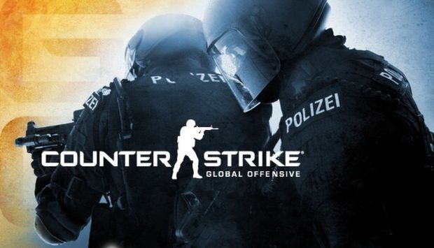

| El primer Counter-Strike fue publicado en 1999 como mod de Half-Life. A medida que progresaba desde una beta hasta la versión completa, Counter-Strike refinó la clásica forma de jugar que ha llegado a definir los shooters competitivos y produjo una dedicada comunidad que lleva siguiendo el juego desde hace más de una década. | Counter-Strike: Global Offensive (CS:GO) amplía el juego de acción por equipos del que fue pionera la franquicia cuando salió en 1999. CS:GO trae nuevos mapas, personajes y armas, y ofrece versiones actualizadas de contenido clásico de CS (p. ej., de_dust). Además, presenta nuevos modos de juego, matchmaking, marcadores y mucho más. |